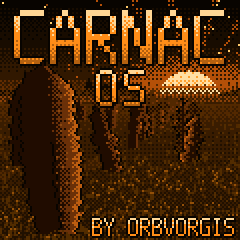

CARNAC OS is a dual-timbral wavetable synth drawing inspiration from neolithic monuments and forgotten rituals. Designed for deep sound design exploration, it combines a MAQ 16/3-style sequencer for intricate modulated sequences with a chord sequencer for harmonic progressions.